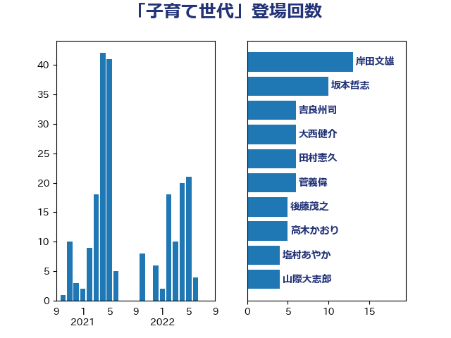

単語「子育て世代」

| 岸田文雄 | 自由民主党 | 13 回 |
| 坂本哲志 | 自由民主党 | 10 回 |
| 吉良州司 | 無所属 | 6 回 |
| 大西健介 | 立憲民主党 | 6 回 |
| 田村憲久 | 自由民主党 | 6 回 |
| 菅義偉 | 自由民主党 | 6 回 |
| 後藤茂之 | 自由民主党 | 5 回 |
| 高木かおり | 日本維新の会 | 5 回 |
| 塩村あやか | 立憲民主党 | 4 回 |
| 山際大志郎 | 自由民主党 | 4 回 |
| 仁木博文 | 無所属 | 3 回 |
| 伊佐進一 | 公明党 | 3 回 |
| 伊藤孝恵 | 国民民主党 | 3 回 |
| 岸真紀子 | 立憲民主党 | 3 回 |
| 櫛渕万里 | れいわ新選組 | 3 回 |
| 河西宏一 | 公明党 | 3 回 |
| 田島麻衣子 | 立憲民主党 | 3 回 |
| 自見はなこ | 自由民主党 | 3 回 |
| 藤田文武 | 日本維新の会 | 3 回 |
| 西銘恒三郎 | 自由民主党 | 3 回 |
| 野田聖子 | 自由民主党 | 3 回 |
| 三木圭恵 | 日本維新の会 | 2 回 |
| 三浦信祐 | 公明党 | 2 回 |
| 佐々木さやか | 公明党 | 2 回 |
| 加藤鮎子 | 自由民主党 | 2 回 |
| 古屋範子 | 公明党 | 2 回 |
| 吉川赳 | 無所属 | 2 回 |
| 塩川鉄也 | 日本共産党 | 2 回 |
| 杉尾秀哉 | 立憲民主党 | 2 回 |
| 梅村みずほ | 日本維新の会 | 2 回 |
| 比嘉奈津美 | 自由民主党 | 2 回 |
| 浜口誠 | 国民民主党 | 2 回 |
| 田村智子 | 日本共産党 | 2 回 |
| 田村貴昭 | 日本共産党 | 2 回 |
| 舩後靖彦 | れいわ新選組 | 2 回 |
| 阿部知子 | 立憲民主党 | 2 回 |
| 音喜多駿 | 日本維新の会 | 2 回 |
| 麻生太郎 | 自由民主党 | 2 回 |
| おおつき紅葉 | 立憲民主党 | 1 回 |
| 三ッ林裕巳 | 自由民主党 | 1 回 |
| 下野六太 | 公明党 | 1 回 |
| 井坂信彦 | 立憲民主党 | 1 回 |
| 今枝宗一郎 | 自由民主党 | 1 回 |
| 伊波洋一 | 無所属 | 1 回 |
| 倉林明子 | 日本共産党 | 1 回 |
| 務台俊介 | 自由民主党 | 1 回 |
| 勝部賢志 | 立憲民主党 | 1 回 |
| 吉田久美子 | 公明党 | 1 回 |
| 大島敦 | 立憲民主党 | 1 回 |
| 宗清皇一 | 自由民主党 | 1 回 |
| 宮本徹 | 日本共産党 | 1 回 |
| 小池晃 | 日本共産党 | 1 回 |
| 小野泰輔 | 日本維新の会 | 1 回 |
| 山岸一生 | 立憲民主党 | 1 回 |
| 山本左近 | 自由民主党 | 1 回 |
| 山田勝彦 | 立憲民主党 | 1 回 |
| 山田賢司 | 自由民主党 | 1 回 |
| 市村浩一郎 | 日本維新の会 | 1 回 |
| 木原稔 | 自由民主党 | 1 回 |
| 木村英子 | れいわ新選組 | 1 回 |
| 末松信介 | 自由民主党 | 1 回 |
| 杉久武 | 公明党 | 1 回 |
| 梶山弘志 | 自由民主党 | 1 回 |
| 森屋宏 | 自由民主党 | 1 回 |
| 森本真治 | 立憲民主党 | 1 回 |
| 横沢高徳 | 立憲民主党 | 1 回 |
| 橋本岳 | 自由民主党 | 1 回 |
| 熊谷裕人 | 立憲民主党 | 1 回 |
| 片山大介 | 日本維新の会 | 1 回 |
| 玉木雄一郎 | 国民民主党 | 1 回 |
| 矢倉克夫 | 公明党 | 1 回 |
| 石田昌宏 | 自由民主党 | 1 回 |
| 福山哲郎 | 立憲民主党 | 1 回 |
| 稲富修二 | 立憲民主党 | 1 回 |
| 稲津久 | 公明党 | 1 回 |
| 緑川貴士 | 立憲民主党 | 1 回 |
| 萩生田光一 | 自由民主党 | 1 回 |
| 西岡秀子 | 国民民主党 | 1 回 |
| 西村康稔 | 自由民主党 | 1 回 |
| 越智隆雄 | 自由民主党 | 1 回 |
| 逢坂誠二 | 立憲民主党 | 1 回 |
| 野上浩太郎 | 自由民主党 | 1 回 |
| 野間健 | 立憲民主党 | 1 回 |
| 須藤元気 | 無所属 | 1 回 |